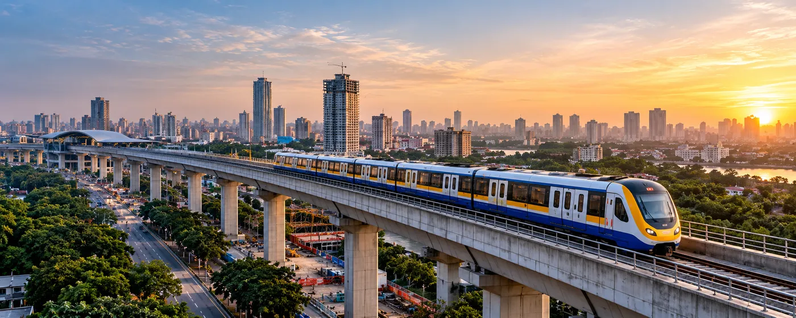

About the Client
Mumbai Metropolitan Region Development Authority (MMRDA) is a public infrastructure authority overseeing metro, road and regional connectivity projects across the Mumbai Metropolitan Region.
The organization manages a complex, multi-stakeholder infrastructure ecosystem involving multiple metro lines and major infrastructure packages.
The Challenge
The delivery of multiple large-scale metro and infrastructure projects required coordinated management across design, construction, project controls and different stakeholder groups.
Project information was distributed across documents, spatial datasets and applications, making it necessary to establish a connected digital environment that could provide greater visibility across projects.
Key requirements included:
- Coordinating complex projects across design and construction
- Connecting siloed documents, spatial data and applications
- Improving visibility of project progress, cost and schedule
- Establishing standardized workflows and governance across projects
- Creating a scalable digital foundation capable of supporting multiple projects
The Solution
CS TECH Ai supported the implementation of an Integrated Digital Delivery Platform (IDDP) that brings together project governance, engineering information, spatial intelligence and project controls within a connected digital environment.
The platform combines:
- Owner's Support Office (OSO) governance
- Common Data Environment (CDE)
- GIS and spatial data
- 3D/4D/5D BIM
- Project dashboards
- Enterprise integration
This integrated approach provides stakeholders with a connected view of project information while supporting coordinated digital delivery across multiple metro and infrastructure projects.
What Was Set Up
The digital delivery environment included:
- Owner's Support Office (OSO) and delivery governance
- 3D/4D/5D BIM guidelines and implementation support
- GIS web/mobile applications and spatial data integration
- CDE workflows for documents, approvals and version control
- Project dashboards for progress visibility
- ERP integration touchpoints
Together, these components connected BIM, GIS, CDE and enterprise information to support project delivery and governance.
The Impact
The Integrated Digital Delivery Platform established a more connected and standardized environment for managing complex infrastructure delivery.
Key impacts included:
The platform provides an integrated digital framework for bringing together project information, spatial context, engineering models and delivery workflows across metro and infrastructure programmes.